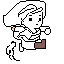

HI! I'm Tobias!
I'm a passionate artist and game-developer from Germany.
I develop tools for drawing in 3D VR, which I then use for my concept art.
I'm a passionate artist and game-developer from Germany.
I develop tools for drawing in 3D VR, which I then use for my concept art.
I am Tobias Geib, I am 28 and have studied media-informatics at Saarland University and Keio University Tokyo, which I graduated with a Master's degree of Science.
Now, I want to combine my artistic skills with my technical knowledge by working as a concept artist in the games industry.
I specialize in using VR as a creative tool for my concept art.
I build 3D environments and pose characters in VR using Gravity Sketch, which are then rendered and painted over for the finished piece.
I have worked as an artist for Capslabs on a canceled game-project, for which I created this concept art and 2D assests, like this little guy's running animation.

In my free time I write and record my own music.
I casually play guitar and I like writing for orchestral instruments aswell.
I use Cubase as my DAW and Native Instruments for various VSTs.
For a VR Rhythm game I developed I wrote this song, which you can check out if you want.
So far, I have lived in Japan for roughly 2 years in total.
In 2010 I visited the Asuwa High School (福井県立 足羽高等学校) in Fukui as an exchange student.
Then, in 2018-2019 I went to the Keio University (慶應義塾大学) in Tokyo, where I took their Japanese Language Program.
During my time I there, I had so many great experiences and in the future I want to further improve my language skills.
If you want to contact me, please write me an E-Mail:


{kind=link}
{kind=link}
{kind=link}
{kind=link}
{kind=link}
{kind=link}